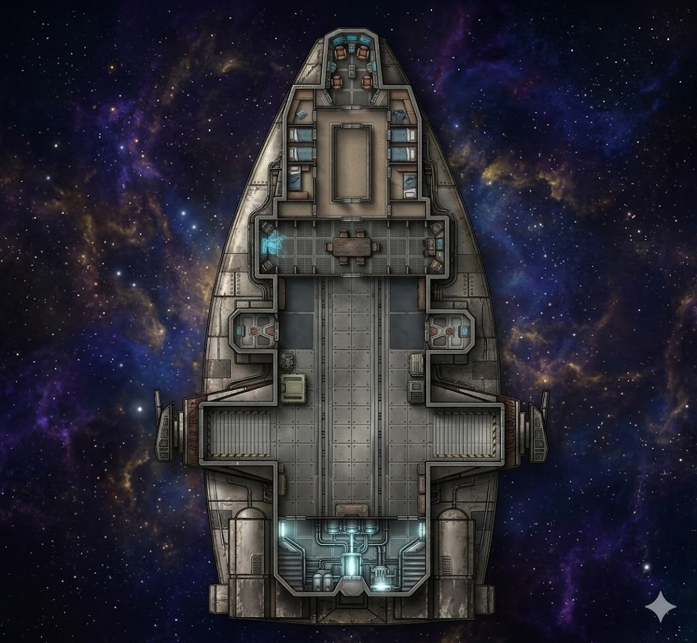

A Barloz-class Medium Freighter, heavily modified and showing every year of hard use. The Banshee is Maya's ship — her home, her livelihood, and her escape route from every bad deal she's ever walked into. She knows every rattle, every quirk, every shortcut in the maintenance manual. The ship is old but sound, fast when it needs to be, and tougher than it looks. It seats a crew of two comfortably and carries passengers and cargo with the casual indifference of a vessel built for the margins of the galaxy.
Port-forward cockpit seat. Primary flight controls — yoke, throttle, maneuvering thrusters, hyperspace motivator interface. Maya's station. The seat is custom-fitted and the controls show years of muscle memory.
Starboard-forward cockpit seat. Secondary flight controls, nav computer interface, and power distribution. The co-pilot handles calculations, power management, and backup flight during combat maneuvers. Maya's standing invitation to the crew's best pilot.
Port-rear cockpit station. Long-range sensors, short-range scanners, comm array controls, and transponder management. Monitors contacts, filters signal traffic, and handles hails. Critical for detecting threats before they become problems.
Starboard-rear cockpit station. Deflector shield management, forward weapon controls, and targeting computer interface. Shield distribution (fore/aft/port/starboard) is manual — someone has to actively manage it during combat. The forward guns are fixed-mount; the ventral turret is controlled from the gunwell below.
Central gathering space on the crew deck. Bolted-down table, bench seating, dejarik board. This is where plans are made, meals are eaten, and downtime happens. Sound carries — you can hear the cockpit, cargo bay, and engines from here.
Full workshop corridor between crew deck and cargo bay. Workbenches, plasma cutter, spare parts inventory, and the ship's starship tool kit (locked, Maya's thumbprint). All repairs happen here. Without the tool kit, repair work is significantly harder.
Largest space aboard. Reinforced deck with tie-downs, overhead gantry crane, port and starboard loading ramps. Current load is light. The bay echoes and carries sound. Cargo elevator in the centre provides access to ventral maintenance.
Main reactor, twin sublight engines, and all primary power systems. Hot, loud, and critical. The diagnostic terminal here shows real-time status for every system aboard. Access to the gunwell shaft is at the aft end.